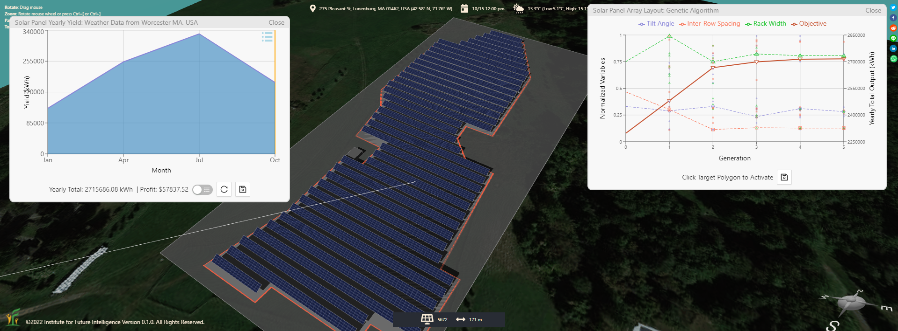
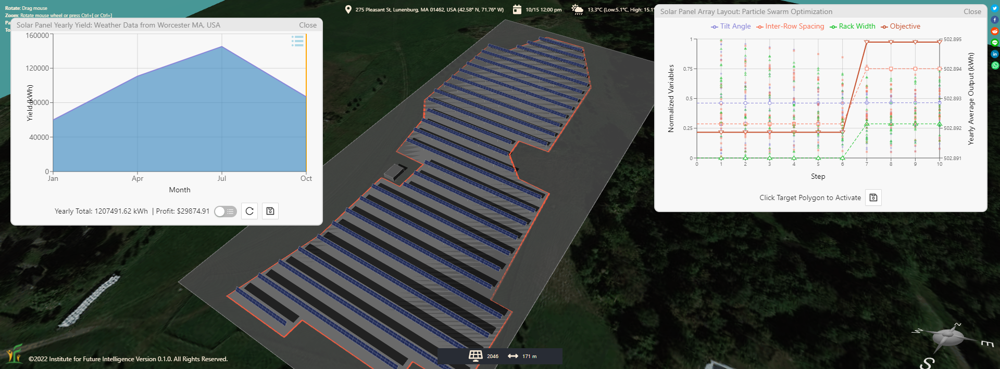
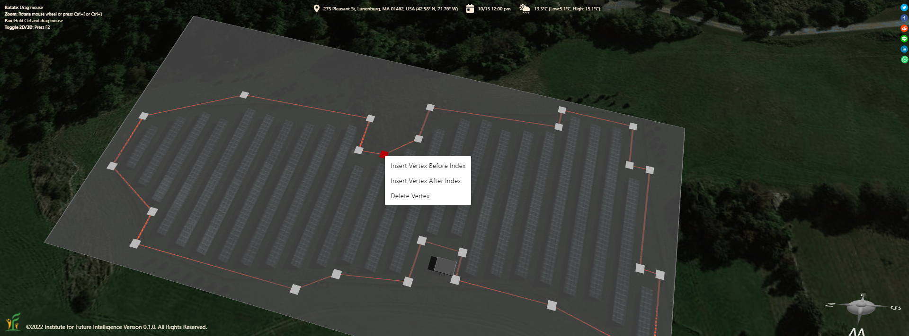
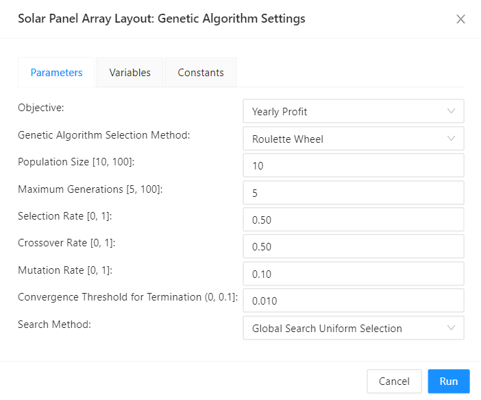
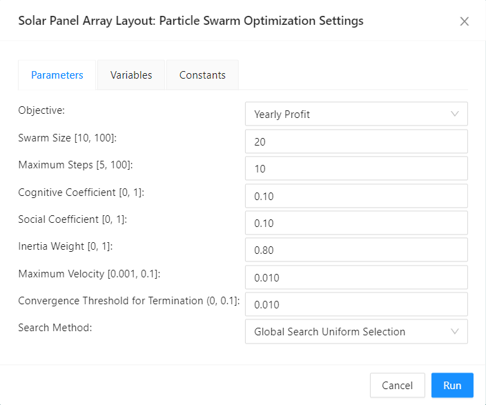
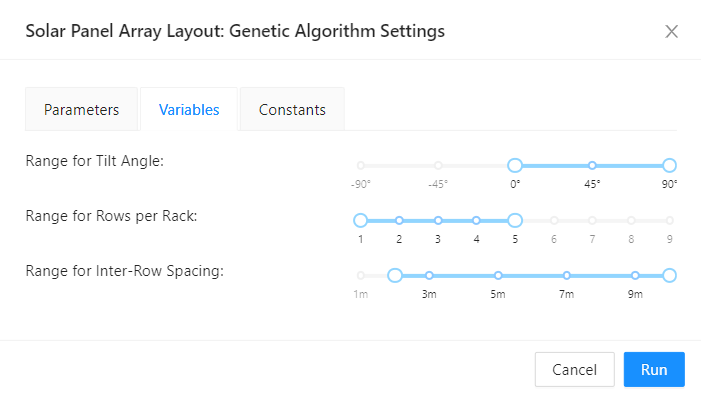
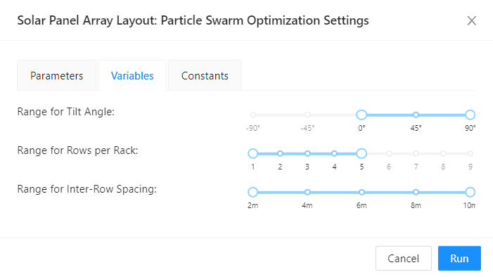
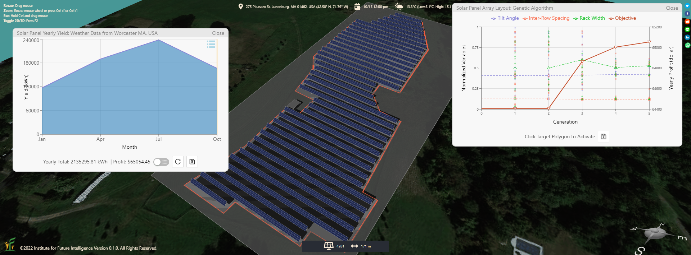
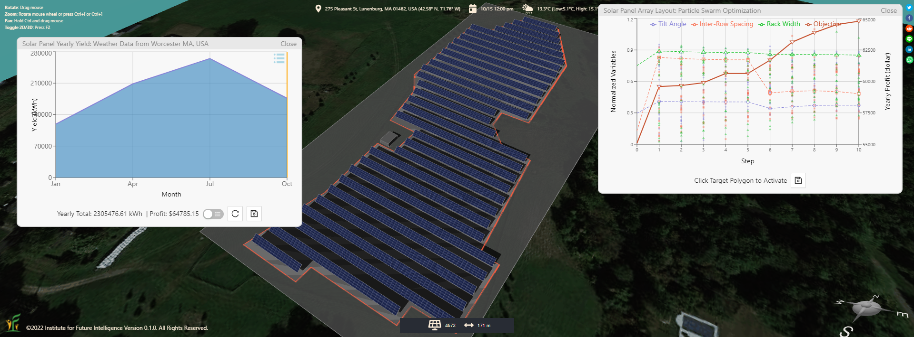

Designing a Solar Farm with Artificial Intelligence
Letting genetic algorithms and particle swarm optimization search the solution space for a profitable solar farm layout.
Everyone loves to maximize the return on investment (ROI). If we can effortlessly find a solution that pays a higher profit — even for only a few more dollars, why not? The problem is that, in many complicated engineering cases in reality, such as designing a solar farm, we often don't know exactly what the optimal solutions are. We may know how to get some good solutions based on what textbooks or experts assert, but no one in the world can be 100% sure that there aren't any better ones waiting to be discovered beyond the solution space that we have explored thus far. As humans, we can easily get complacent and settled with the solutions that we feel good about, leaving the job (and the reward) of finding better solutions for another time or to someone else.
Artificial intelligence (AI) is about to change all that.
As design is essentially an evolution of or search for solutions, bio-inspired AI techniques such as genetic algorithms (GA) and particle swarm optimization (PSO) are an excellent fit to the nature of many design problems and can generate a rich variety of competitive solutions in the same way genetics does for biology (no two leaves are exactly the same but they both work well for the plant). These powerful tools have the potential to help people learn, design, and discover novel things. In this article, I demonstrate how GA and PSO can be used to design a photovoltaic (PV) solar farm. As usual, I first provide a short screencast video so that you can get a sense of how AI solves the design challenge step by step (to accelerate the animation, I used the objective function of daily profit to produce the video — the images in this article were actually produced using the more appropriate objective function of yearly profit, though). The solar farm in question is from Fitchburg, Massachusetts, USA (satellite image).
Choosing the objective function
In AI, the solution depends largely on the choice of the objective function or the fitness function, which specifies how the goal is formulated and calculated. For example, if the goal is to generate as much electricity as possible on a given piece of land without any concern to the cost of the solar panels, a design in which the solar panels are closely packed may be a good choice (Figure 1). On the other hand, if the goal is to generate as much electricity as possible from each individual solar panel, a design in which rows of solar panels minimize their shadow on one another would be a good choice (Figure 2). In the real world, designers aim at maximizing the economic profit (revenue minus cost), resulting in solutions between these two extremes. The total revenue is dictated by the generated electricity and the selling price. The total cost consists of mortgage, maintenance, rental, and so on, which can be assumed to be proportional to the total number of solar panels. The problem is usually solved using the principles of engineering design, which involve balancing competing factors and making trade-offs among them through iterations.


Setting up the constraints
Before we apply AI to solve a design problem, we have to understand and establish the constraints. One of the contraints is the boundary condition, which in this case specifies the area in which the solar panels will be installed. Aladdin has a tool that allows the user to draw a polygon of an arbitrary shape on a foundation for this purpose (Figure 3). Using this polygon tool, we can ensure that the solar panel arrays generated by AI will always be confined to the designated area.

Other constraints include parameters that may affect the design outcomes, such as economic and financial variables. For simplicity, let's assume that the generated electricity can sell for 25¢ per kWh and the daily operational cost of each solar panel is 30¢. Qualitatively, a higher electricity price and a lower operational cost favor more solar panels, whereas a lower electricity price and a higher operational cost favor less. Finding the sweet spots in the middle requires quantitative analyses and comparisons of many different scenarios, a repetitive and laborious task that can be "outsourced" to AI.
Evolving the design
Although there are many parameters that can affect the profit of a solar farm, we focus primarily on three key ones: the tilt angle, the inter-row spacing, and the row width (the number of solar panels in the direction perpendicular to the tilt axis). We assume that all the solar panel rows have the same tilt angle and row width and are equally spaced. Therefore, these three parameters are largely responsible for the form factor of a solar farm. We can then ask AI to automatically vary the parameters and generate various solutions for us to consider. Figure 4 shows the dialog windows for setting the parameters, variables, and constants for GA and PSO algorithms, respectively. The explanations of these parameters are skipped here. Interested readers can learn about them from the Wikipedia pages linked above. Note that the range sliders in the Variables Tabs of the dialog windows enable us to narrow AI down to a smaller volume of the solution space. For instance, since we are designing a solar farm for a location in the northern hemisphere, it makes no sense to allow the tilt angle to go negative (i.e., facing north).




The following figures show a couple of solutions recommended by Aladdin after generating and evaluating hundreds of solutions using GA and PSO, respectively. It took AI quite a while to come up with them, because it had to run a lot of simulations of annual cycle for thousands of solar panels with only the computational power of a browser.


As a side note, Aladdin allows users to switch between different AI algorithms freely in a middle of a design process to take advantage of their relative strengths (if any). For example, users can start with PSO initially and then switch to GA, or vice versa. They can also adjust the parameters of the algorithms at any time to change the search strategies.
Discussion
You may think the problem of solar farm design is trivial. This impression may be true if we are designing only for a rectangular field. But the problem becomes much trickier when the field has an arbitrary shape like the one shown in this article due to the many more possibilities that arise from the irregularity of the shape. In a sense, the problem may be even more complex than the famous travelling salesperson problem — for instance the objective function of the former is way more complex than that of the latter. In such a case, it makes sense to use AI to search a large volume of the solution space and find a number of different solutions for the designer to pick and choose. Because every solar farm in reality may have a different shape (especially in densely populated areas when land is scarce), the design problem can only be addressed case by case. The ability of AI to transcend human limitations in this kind of complex design is a significant application of AI that is going to reshape our world. Future work will rely more and more on this power. Today's students must get ready for its big time.
← Back to Aladdin